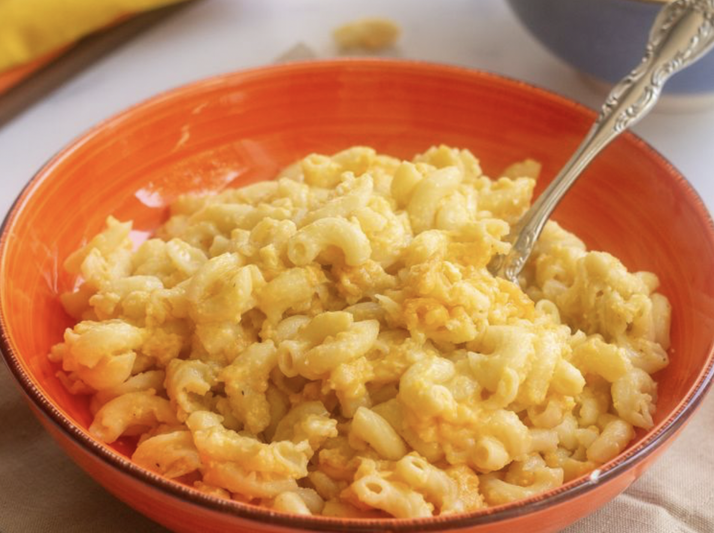

Mac And Cheese Recipe

Ingredients:
- Macaroni
- Butter
- Seasoning
- Cheese
- Milk Products
- Eggs
- Canned Soup
- Paprika
Follow these steps:
- Boil the pasta in salted water, then drain and transfer to the slow cooker.
- Stir in the butter, seasonings, and about half of the Cheddar.
- Whisk the evaporated milk and eggs together, then stir into the pasta.
- Whisk the milk and the soup together, then stir into the pasta.
- Sprinkle the remaining cheese over the pasta mixture and garnish with paprika.
- Cook on Low for 2 ½ to 3 hours.
Cooking Tips:
To bake in a conventional oven, pour pasta mixture into a casserole dish and bake at 350 degrees F (175 degrees C) for 45 minutes to 1 hour.